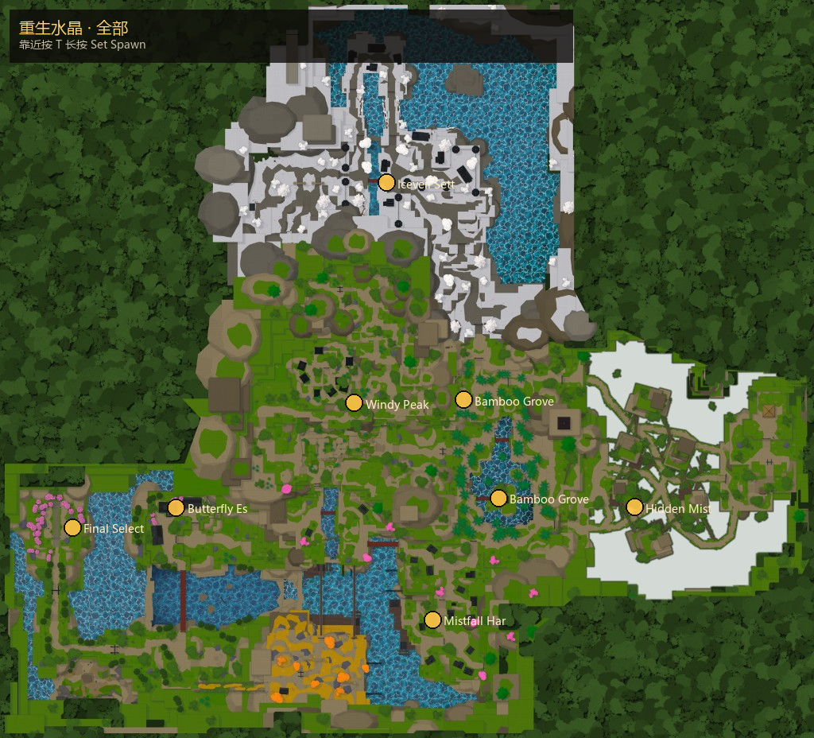

重生水晶
游戏内称为 Spawn Crystal。靠近后出现交互「Set Spawn」（默认键 T，长按约 1 秒），把你的重生点设到该水晶。
- 死亡或使用回城类效果时，会在当前设定的水晶附近重生（区域 Spawns 点）。
- 换图进度前建议先在目标区域水晶设点，减少跑尸。
- 部分水晶挂在子区域名下（如竹林圣所、冰纱聚落、终选）。
- 与付费神庙不同：水晶免费设重生；神庙另见各区域页。

区域范围图见 区域。
主页 / 重生水晶
游戏内称为 Spawn Crystal。靠近后出现交互「Set Spawn」（默认键 T，长按约 1 秒），把你的重生点设到该水晶。

区域范围图见 区域。
共 8 座（实机 Workspace 扫描）。
| # | 名称 | XYZ |
|---|---|---|
| 1 | Iceveil Settlement | -208.8, 1350.5, -2596.5 |
| 2 | Mistfall Harbor | 136.5, 874.4, 733.4 |
| 3 | Bamboo Grove Sanctuary | 627.1, 1017.9, -194.5 |
| 4 | Bamboo Grove | 367.7, 1129.5, -941.1 |
| 5 | Butterfly Estate | -1772.6, 312.5, -120.3 |
| 6 | Windy Peak | -447.9, 1241.4, -919.1 |
| 7 | Final Selection | -2547.6, 275.9, 31.7 |
| 8 | Hidden Mist Village | 1640.0, 606.9, -125.0 |